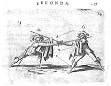
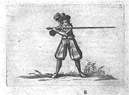
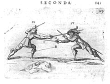

Франческо Альфиери
итал. Francesco Ferdinando Alfieri
англ. Francesco Alfieri
Гражданство: Италия
Италия
Прозвище:Мастер фехтования
Стиль:Веницианская школа фехтования
Франческо Альфиери
итал. Francesco Ferdinando Alfieri
англ. Francesco Alfieri
Гражданство: Италия
Прозвище:Мастер фехтования
Стиль:Веницианская школа фехтования
Франче́ско Фердина́ндо Альфие́ри — мастер фехтования XVII века, представитель венецианской школы фехтования . Альфиери родом из Падуе, на тот момент времени это считалась территорией Венецианской Республики.
Большинство венецианских и итальянских мастеров фехтования в своих трактатах ссылаются на известного в кругах мастеров фехтования Франческо Альфиери, как на непревзойденного мастера фехтования, в многих других источниках, трактатах и других документах за пределами Италии и Венеции также можно найти различные упоминания. Вот что о нём говорит Бласко Флорио в своем трактате «Наука по фехтованию шпагой Бласко Флорио» («La scienza della scherma esposta da Blasco Florio»)
«Мы знаем Альфиери как большого ученого, и таким он в нашей памяти и останется»— Бласко Флорио
Трактаты, написанные Франческо Альфьери:
«La Bandiera» («Знамя» или «Флаг»), опубликованной в 1638 году.
«La Scherma» («Фехтование»), издан в 1640 году и переиздан в 1645 году; о фехтовании рапирой.
«La Picca» («Пика»), издан в 1641 году, дополнение первого трактата
«L’arte di ben maneggiare la spada»издан в 1653 году и переиздан в 1683 г.; Трактат на русском языке вышел под названием «Искусство превосходного владения мечом», включает в себя весь его Трактат о фехтовании рапирой и добавлен раздел об использовании Spadone (двуручный меч).
Древний трактат Франческо Альфиери 1653 года издания «L’arte di ben maneggiare la spada»— с итальянского языка переведен учеными и мастерами фехтования на русский. Книга вышла в свет под названием «Искусство превосходного владения мечом»перевод сделан Научно-Исследовательским Институтом «Мировых традиций воинских искусств и криминальных исследований применения оружия» при сотрудничестве с Школой испанского фехтования «Дестреза Ачинеч».
Трактат
«Искусство превосходного
владения мечом»
Франческо Альфьери
Трактат Франческо Альфьери «Искусство превосходного владения мечом» вызвал огромный восторг среди мастеров фехтования и уважение, так как это стала одна из популярных книг по фехтованию. Даже в современном мире фехтования этот трактат принято считать в области фехтования одним из лучших учебников.
Один из учеников вот так описал трактат его Великого учителя:

«L’arte di ben maneggiare la
spada». Francesco Alfieri
«Прочитав Книгу по Оружию, написанную господином Франческо, я получил огромное удовольствие. Я воспринял основную доктрину и также почувствовал именно эту тонкую грань оживлённости моего духа. Для меня большая честь получить все эти преимущества от изучения Искусства Оружия. Я свидетельствую о том, что V.S. подарил миру мудрость своего выдающегося ума. Это лишь самая маленькая хвала его достоинства, чести и Бессмертной Славы. Таким способом последующие поколения Рыцарей могут вступать в эту смертельную жизнь. Этот рассказ написан проклятым языком, который через века передал всю свою мудрость использования оружия. Этот необычный язык — язык сердца, в котором укоренились все причины и, таким образом, его Страх уходит. После этого я попал в лабиринт проклятия со злыми осуждениями и бесчестием, но в конечном итоге целую руки V.S. и каждый раз бесконечно благодарю Небеса».— Школа, 20 июня 1653, с Чистым сердцем, Анонимный Ученик
Трактат «Искусство превосходного владения мечом»отображает мысль и взгляд Франческо Альфиери на Фехтование, автор описал полный основной комплекс способов и методов, преимуществ, которые человек может приобрети в бою и в повседневной жизни от изучения Искусства Оружия. Альфиери, один из не многих авторов, описал каким образом искусство фехтования можно сделать полезным и, как стать лучшим мастером в этом деле. Этот трактат дошел до наших дней и передал всю свою мудрость и практику использования оружия. Трактат написан - языком сердца, как говорят последователи Альфиери, в котором прорастают причины и принципы фехтования, соответственно, при применении которых исчезает страх и неуверенность в бою.
Франческо Альфиери считается непревзойденным мастером фехтования, на тот момент времени он собрал всю свою практику и опыт в науке и постарался передать это все в своем труде, вывел свою новую Смешанную Боевую позицию.
Смешанная боевая позиция— пропорциональная позиция и пригодна для того, чтобы перейти в Контрбоевую позицию против Первой, Второй, Третьей, Четвёртой боевых позициях. Также здесь можно использовать и высокую форму позиции, например, чтобы отклонить удар в Третьей позиции — вовне или во внутренней части, тогда нужно принять Четвёртую боевую позицию. Таким образом, противнику никак не удастся освободиться, что очень важно для нанесения удара. В этом положении вредно выполнять прямые движения, они могут оказаться смертельными. Если вы не хотите наносить колющие удары, можете найти свой способ, как изменить форму, и потом дальше продолжать фехтовать. В этом случае лучше сделать все, чтобы сохранить выгодное положение без каких-либо ограничений, также найти другие удобные моменты, нанести удар вместе с выпадом в какую-либо более близкую открытую часть тела противника.
Смешанная боевая позиция, кото-
рую ввел Франческо Альфиери
Эта Смешанная боевая позиция позволяла Альфиери все поединки заканчивать победой, поэтому он предпочитал больше ее использовать чаще всех других, использовал в целях защиты и для нанесения ударов противнику. Кроме этого, Автор рассмотрел основные виды оружия, которые больше всего использовались в тот период, рассмотрел отдельно особенности их использования, принципы и истинное предназначение, свои наблюдения и выводы из практики. К рассмотренному оружию относятся: меч, кинжал,спадоне, капа, тарга, брокеро, а именно в трактате затронуты такие темы, как:
Первая часть:
Вторая и Третья части трактата Франческо Альфиери посвящены подробному рассмотрению таких тем, как:
В Трактате содержатся иллюстрации с подробными объяснениями и демонстрациями боевых позиций и как наносятся ударов, выполняется атака и защита.

Трактат Франческо Альфиери «Искусство превосходного владения мечом» заложил основу итальянского фехтования, которое появлялось в тот момент времени. В своем труде он обращает внимание на такие особенности и отличительные черты в итальянском фехтовании:
Нанесение удара в четвёртой
боевой позиции с поднятием
намотанного плаща. Франческо
Альфиери